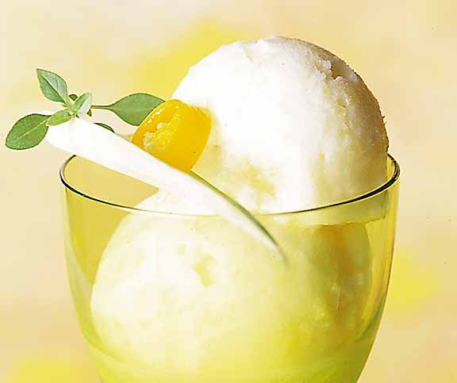

Ananas Pepper Sorbet

Description
This sorbet will surprise all your guests! It is sweet but at the same time sharp and spicy with the touch of pepper and tequila.
The other cool thing is that's easy to make and keep soft even in the freezer, thanks to the touch of tequila.
Ingredients
- 900g of ananas, cut in slice
- 120g of sugar
- 60g of dextrose
- 60g of atomised glucose
- 2,25g of guar gum
- 2,25g of carube's seed flour
- 2 table spoons of tequila
- Juice of half a lime
- 1,10g of finely crushed green pepper
- 0,31g of finely crushed cayenne pepper
- a pinch of salt
Steps
- Blend the fruit and remove any left ananas threads
- Add all the other ingredients and blend it all together
- Store it in the fridge for a few hours until cold
- Put it in your ice machine
- After 30 minutes, your sorbet should be ready!